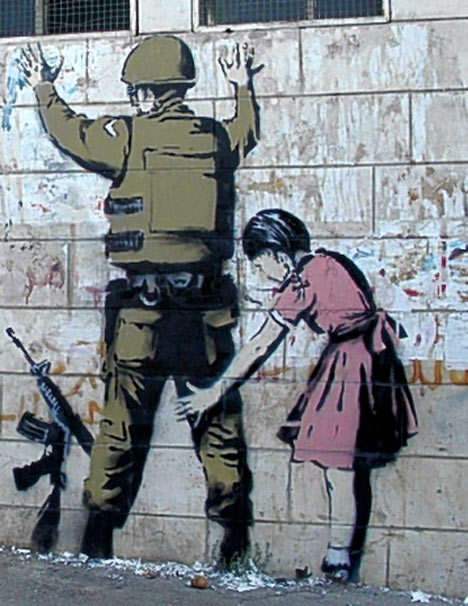

Credit
Girl and a Soldier is one of the 2007 pieces that Banksy put up on a wall in Bethlehem. The little girl is seen frisking an armed soldier in diffrent types of roles to get what she wants. This along with other images on the wall were intended to promote the annual Santa’s Ghetto exhibit. The piece is still visible although somewhat faded today.
2007-11
Spray Paint
Bethlehem, IS